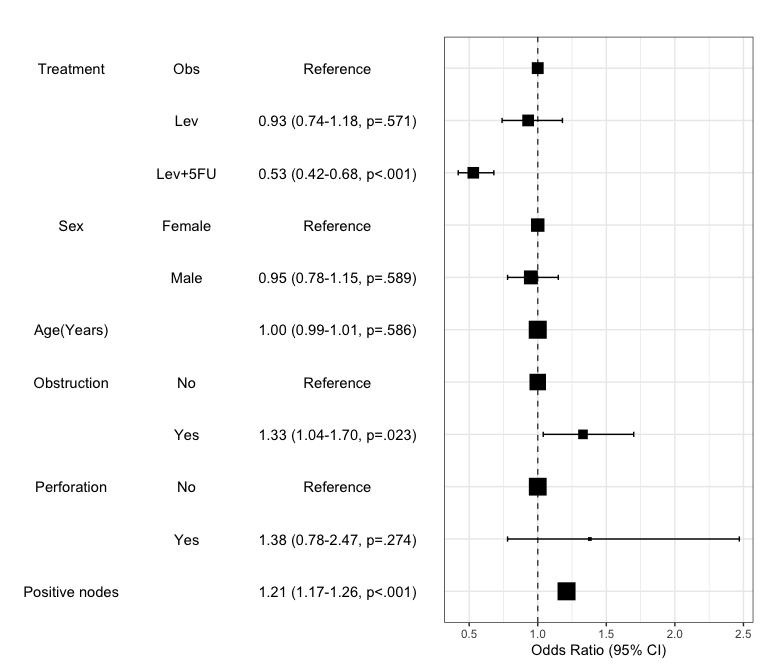
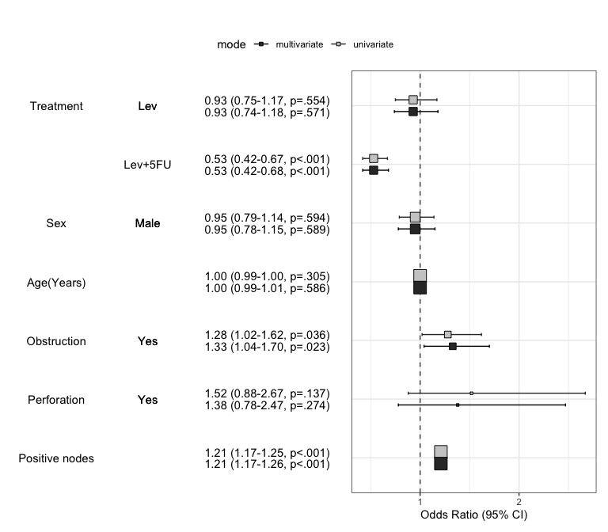

Installation
You can install autoReg package on github.
#install.packages("devtools")
devtools::install_github("cardiomoon/autoReg")Main features
1.Summarizing baseline characteristics : gaze()
You can make a table summarizing baseline characteristics easily.
library(moonBook) # For use of example data acs
gaze(sex~.,data=acs)
————————————————————————————————————————————————————————————————————————
Dependent:sex levels Female Male p
(N) (N=287) (N=570)
————————————————————————————————————————————————————————————————————————
age Mean ± SD 68.7 ± 10.7 60.6 ± 11.2 <.001
cardiogenicShock No 275 (95.8%) 530 (93%) .136
Yes 12 (4.2%) 40 (7%)
entry Femoral 119 (41.5%) 193 (33.9%) .035
Radial 168 (58.5%) 377 (66.1%)
Dx NSTEMI 50 (17.4%) 103 (18.1%) .012
STEMI 84 (29.3%) 220 (38.6%)
Unstable Angina 153 (53.3%) 247 (43.3%)
EF Mean ± SD 56.3 ± 10.1 55.6 ± 9.4 .387
height Mean ± SD 153.8 ± 6.2 167.9 ± 6.1 <.001
weight Mean ± SD 57.2 ± 9.3 68.7 ± 10.3 <.001
BMI Mean ± SD 24.2 ± 3.6 24.3 ± 3.2 .611
obesity No 194 (67.6%) 373 (65.4%) .580
Yes 93 (32.4%) 197 (34.6%)
TC Mean ± SD 188.9 ± 51.1 183.3 ± 45.9 .124
LDLC Mean ± SD 117.8 ± 41.2 116.0 ± 41.1 .561
HDLC Mean ± SD 39.0 ± 11.5 37.8 ± 10.9 .145
TG Mean ± SD 119.9 ± 76.2 127.9 ± 97.3 .195
DM No 173 (60.3%) 380 (66.7%) .077
Yes 114 (39.7%) 190 (33.3%)
HBP No 83 (28.9%) 273 (47.9%) <.001
Yes 204 (71.1%) 297 (52.1%)
smoking Ex-smoker 49 (17.1%) 155 (27.2%) <.001
Never 209 (72.8%) 123 (21.6%)
Smoker 29 (10.1%) 292 (51.2%)
————————————————————————————————————————————————————————————————————————For easy reproducible research : myft()
You can make a publication-ready table easily using myft(). It makes a flextable object which can use in either HTML and PDF format.
library(dplyr) # for use of `%>%`
Attaching package: 'dplyr'
The following objects are masked from 'package:stats':
filter, lag
The following objects are masked from 'package:base':
intersect, setdiff, setequal, union
ft=gaze(sex~.,data=acs) %>% myft()
ftYou can also make a powerpoint file using rrtable::table2pptx() function.
library(rrtable)
table2pptx(ft)Exported table as Report.pptxYou can make a microsoft word file using rrtable::table2docx() function.
table2docx(ft)Exported table as Report.docxSummarizing baseline characteristics with two or more grouping variables
You can get a table summarizing baseline characteristics with two or more grouping variables.
You can also use three or more grouping variables.The resultant table will be too long to review, but you can try.
2. For automatic selection of explanatory variables : autoReg()
You can make a table summarizing results of regression analysis. For example, let us perform a logistic regression with the colon cancer data.
library(survival) # For use of data colon
data(cancer)
fit=glm(status~rx+sex+age+obstruct+perfor+nodes,data=colon,family="binomial")
summary(fit)
Call:
glm(formula = status ~ rx + sex + age + obstruct + perfor + nodes,
family = "binomial", data = colon)
Deviance Residuals:
Min 1Q Median 3Q Max
-2.4950 -1.0594 -0.7885 1.1619 1.6424
Coefficients:
Estimate Std. Error z value Pr(>|z|)
(Intercept) -0.645417 0.285558 -2.260 0.0238 *
rxLev -0.067422 0.118907 -0.567 0.5707
rxLev+5FU -0.627480 0.121684 -5.157 2.51e-07 ***
sex -0.053541 0.098975 -0.541 0.5885
age 0.002307 0.004234 0.545 0.5859
obstruct 0.283703 0.125194 2.266 0.0234 *
perfor 0.319281 0.292034 1.093 0.2743
nodes 0.190563 0.018255 10.439 < 2e-16 ***
---
Signif. codes: 0 '***' 0.001 '**' 0.01 '*' 0.05 '.' 0.1 ' ' 1
(Dispersion parameter for binomial family taken to be 1)
Null deviance: 2525.4 on 1821 degrees of freedom
Residual deviance: 2342.4 on 1814 degrees of freedom
(36 observations deleted due to missingness)
AIC: 2358.4
Number of Fisher Scoring iterations: 4You can make table with above result.
autoReg(fit)
——————————————————————————————————————————————————————————————————————————————————
Dependent: status 0 (N=925) 1 (N=897) OR (multivariable)
——————————————————————————————————————————————————————————————————————————————————
rx Obs 282 (30.5%) 342 (38.1%)
Lev 285 (30.8%) 323 (36%) 0.93 (0.74-1.18, p=.571)
Lev+5FU 358 (38.7%) 232 (25.9%) 0.53 (0.42-0.68, p<.001)
sex Mean ± SD 0.5 ± 0.5 0.5 ± 0.5 0.95 (0.78-1.15, p=.589)
age Mean ± SD 60.1 ± 11.5 59.5 ± 12.3 1.00 (0.99-1.01, p=.586)
obstruct Mean ± SD 0.2 ± 0.4 0.2 ± 0.4 1.33 (1.04-1.70, p=.023)
perfor Mean ± SD 0.0 ± 0.2 0.0 ± 0.2 1.38 (0.78-2.47, p=.274)
nodes Mean ± SD 2.7 ± 2.4 4.6 ± 4.2 1.21 (1.17-1.26, p<.001)
——————————————————————————————————————————————————————————————————————————————————Or you can make a publication-ready table.
If you want make a table with more explanation, you can make categorical variables with numeric variables. For example, the explanatory variables obstruct(obstruction of colon by tumor) and perfor(perforation of colon) is coded as 0 or 1, but it is “No” or “Yes” actually. Also the dependent variable status is coded as 0 or 1, it is “Alive” or “Died”.
colon$status.factor=factor(colon$status,labels=c("Alive","Died"))
colon$obstruct.factor=factor(colon$obstruct,labels=c("No","Yes"))
colon$perfor.factor=factor(colon$perfor,labels=c("No","Yes"))
colon$sex.factor=factor(colon$sex,labels=c("Female","Male"))
fit=glm(status.factor~rx+sex.factor+age+obstruct.factor+perfor.factor+nodes,data=colon,family="binomial")
result=autoReg(fit)
result %>% myft()You can add labels to the names of variables with setLabel() function.
colon$status.factor=setLabel(colon$status.factor,"Mortality")
colon$rx=setLabel(colon$rx,"Treatment")
colon$age=setLabel(colon$age,"Age(Years)")
colon$sex.factor=setLabel(colon$sex.factor,"Sex")
colon$obstruct.factor=setLabel(colon$obstruct.factor,"Obstruction")
colon$perfor.factor=setLabel(colon$perfor.factor,"Perforation")
colon$nodes=setLabel(colon$nodes,"Positive nodes")
fit=glm(status.factor~rx+sex.factor+age+obstruct.factor+perfor.factor+nodes,data=colon,family="binomial")
result=autoReg(fit)
result %>% myft()If you do not want to show the reference values in table, you can shorten the table.
Add univariate models to table and automatic selection of explanatory variables
You can add the results of univariate analyses to the table. At this time, the autoReg() function automatically select explanatory variables below the threshold(default value 0.2) and perform multivariate analysis. In this table, the p values of explanatory variables sex.factor and age is above the default threshold(0.2), they are excluded in multivariate model.
If you want to include all explanatory variables in the multivariate model, just set the threshold 1.
You can perform stepwise backward elimination to select variables and make a final model. Just set final=TRUE.
Summarize regression model results in a plot : modelPlot()
You can draw the plot summarizing the model with modelPlot()
x=modelPlot(fit)
x
You can make powerpoint file with this plot using rrtable::plot2pptx().
plot2pptx(print(x))Exported plot as Report.pptxYou can summarize models in a plot. If you want to summarize univariate and multivariate model in a plot, just set the uni=TRUE and adjust the threshold. You can decide whether or not show the reference by show.ref argument.
modelPlot(fit,uni=TRUE,threshold=1,show.ref=FALSE)